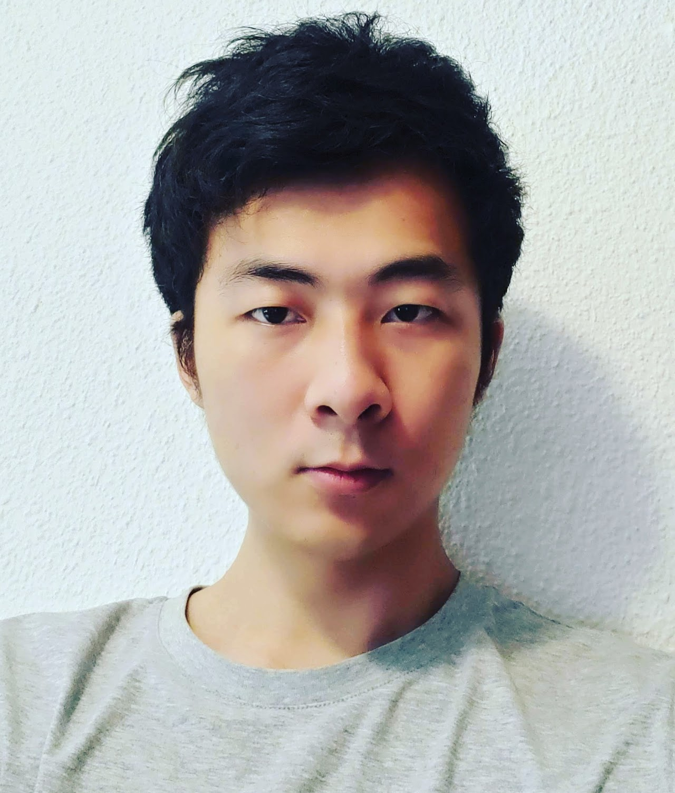

Shiqi Yang is a fourth year (final year) PhD student in Computer Vision Center, Autonomous University of Barcelona. He is supervised by Dr. Joost van de Weijer. His research during PhD mainly focuses on model adaptation under domain and category shift, including source-free/continual/open-set domain adaptation. He received master degree in Huazhong University of Science and Technology, and once worked in Kyoto University as research associate. Personal homepage: https://www.shiqiyang.xyz/.
Short Abstract:In recent years, large amount of works emerged in the domain adaptation community, aiming to address the domain shift between training and test data. While there still remain plenty of challenging problems for further investigation. For example, 1) demanding source data during adaptation is impossible in some privacy-sensitive applications (e.g., surveillance or medical applications), and 2) unseen categories may exist in the test data in the real-world scenarios. In this talk, I will first introduce a method to address domain adaptation without source data, from the perspective of unsupervised clustering, and meanwhile we could relate several methods in domain adaptation via the view of discriminability and diversity. Then, we propose to deploy an attention based regularization to avoid forgetting on the source domain after model adaptation. Finally, I will present an elegantly simple method to address domain and category shift simultaneously during model adaptation.